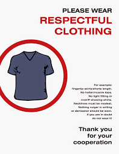
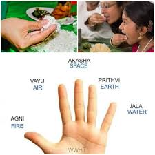
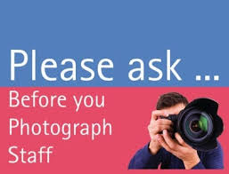
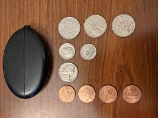
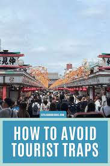

Introduction
Traveling across India is an unforgettable experience filled with diversity, color, culture and incredible food. To ensure a smooth and safe journey, here are essential travel tips covering safety, transportation, food, cultural etiquette, and budgeting. These tips help visitors understand local customs, stay healthy, save money and explore with confidence.
Safety Tips
Keep Your Belongings Safe
Always keep wallets, phones and documents in front-facing zipped bags. Crowded places like markets or bus stands may attract pickpockets, so stay alert and avoid displaying expensive items.
Use Trusted Transport
When traveling alone or at night, prefer approved taxi apps or prepaid stands at airports and railway stations. Always check licence plates and driver details before boarding.
Stay Hydrated
India’s climate varies widely, but many regions can be hot and humid. Drink clean bottled or filtered water and avoid dehydration when exploring outdoors.
Avoid Isolated Areas at Night
Whether in big cities or small towns, stick to public, well-lit areas during late hours. If you must travel, inform someone of your location and route.
Transportation Tips
Use UPI & Digital Payments
UPI apps like Google Pay and PhonePe are accepted almost everywhere. Carry some cash, but digital payments are safer and easier for cabs, shops and small vendors.
Railways for Long Travel
India’s railway network is one of the world’s largest. It is economical and comfortable for long distances. Book in advance, especially during festival seasons.
Verify Auto/Taxi Fares
In many cities, auto-rickshaw and taxi fares may vary. Use meter-based rides where possible or check the fare estimate on Google Maps to avoid overcharging.
Domestic Flights for Far Cities
India is huge — flights between major cities can save many hours. Book early for discounts and compare prices across airlines.
Food & Health Tips
Drink Clean Water
Always prefer bottled or filtered water. Avoid tap water unless you are sure it is purified. Hydration is essential, especially in hot regions.
Be Careful with Street Food
India has amazing street food, but start with cleaner stalls. Eat fresh, hot items and avoid raw vegetables or fruits from unknown vendors.
Carry Basic Medicines
Keep medicines for headache, stomach issues, fever and motion sickness. Pharmacies are common, but having your own kit saves time during emergencies.
Start with Mild Spices
Indian food can be spicy. If you’re not used to strong flavours, request mild versions to avoid stomach discomfort while travelling.
Cultural Etiquette
Remove Shoes in Temples
Many religious places require visitors to remove footwear. Some temples also restrict photography, so check guidelines before entering.

Dress Respectfully
In cultural and religious places, modest clothing is expected. Covering shoulders and legs is common practice in many regions.

Right Hand Rule
In Indian culture, the right hand is traditionally used for giving and receiving items, eating, and touching sacred objects.

Ask Before Taking Photos
While many places welcome photography, always ask before taking pictures of people, religious activities, or private homes.
Budget & Money Tips
UPI Works Everywhere
Digital payments are widely accepted. UPI makes transactions quick and secure, especially in markets and small shops.

Carry Small Change
Autos, buses and small vendors often prefer exact change. Keeping ₹10, ₹20 and ₹50 notes helps avoid confusion.
Book Hotels Online
Use trusted travel apps to compare prices. Booking early secures better deals, especially in tourist cities during peak seasons.

Avoid Tourist Traps
Popular landmarks often have overpriced shops. Explore local markets instead for authentic souvenirs and fair pricing.
Summary of All Travel Tips
| Category | Tip | Description |
|---|---|---|
| Safety | Keep Belongings Safe | Be alert in crowded areas. |
| Transportation | Use UPI | Digital payments are widely accepted. |
| Food & Health | Drink Clean Water | Prefer bottled or filtered water. |
| Cultural Etiquette | Remove Shoes | Many temples require it. |
| Budget | Book Hotels Online | Cheaper and safer booking. |